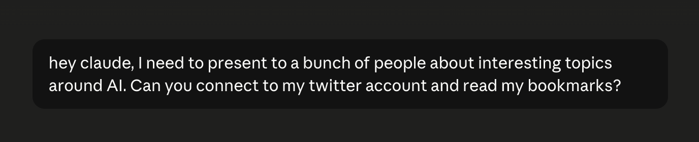

What's been happening, in six steps. And where we take it next.
“Code must not be written by humans.”
StrongDM, a company rule
“My job is to write loops.”
Boris Cherny, creator of Claude Code
259 changes in 30 days. All written by Claude Code.
“You should be designing loops that prompt your agents.”
Peter Steinberger, June 2026, 2.2 million views
“AI does the work you can check.”
Andrej Karpathy
If you can check it, a machine can do it. If you cannot, it stays human. Judgment, taste, direction. Still ours.
"Without people to steer it, you just have computers running in circles." Satya Nadella
An open standard. OpenAI, Google and Microsoft all use it.
In a market full of separate tools, whoever owns the connection owns the market.
Read: Nadella, a frontier needs an ecosystem↗We are not chasing models. We are building the door.
Press any key to close